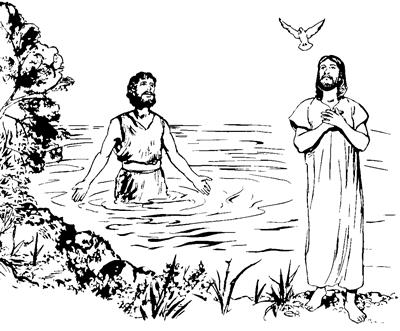
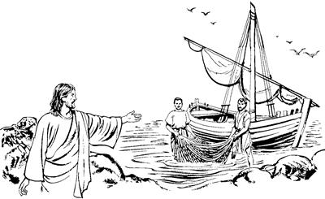

Markus
PONEKORI YUBU WALINGE YESUS SEMBE
MOME TOBOG YUBU
Allahri Elme Yesus wepto poghogne lag taogha
1:1-13
1
1 Yubu walinge Allah Elme Yesus Kristusa sembe na Markusti mome palilamnange tamna ane.2 Samenag Yesus anam yan komag, el mog so'oag yalulne sembe Allahri yubu ambarelamogti, Allah yubu silimu tiptopne Yesaya ponekori tipto mome toro pibog. Allahri samenag Elmeag lebogne Yesaya poneko el taogti, nen tipto mome tobogne ane:
“Nari yubu ambatsirop nimi nhon an whingag pogneba,
‘Eldi ina an pinepne sembe yarelamlul,’ aro pognun.
3 Pognenge poneko pai aldesag urobag pileri,
yubu haum aro nimi yoplamsileri,
‘Ina nu saelbamsilulne yanepne sembe yarelamlulom.
El yanep ina porog nenelamsut,’ aro ambatsilul,”
aro Allahri lebogne sunsunum uro Yesayari mome toro pibog.
Yohanesti maghag pelengelamsiogha
(Matius 3:1-12; Lukas 3:1-18; Yohanes 1:19-20)
4 Yesaya ponekori mome tobogne sunsunum uro Allahri yubu ambatsiropne poghogpa, Yohanes nimi maghag pelengahiropne poneko pai aldesag urobag yaog. Yaogti, Allah yubu ambarelamsiogti, “A'undi mali-malia wanaag seneragto ulamlomne lipsumunba, maghag pelengkipsinun. Pelengkipsineba, a'undi mali-malia ulamlomne Allahri wailag nembaleri, kom nembalul,” aro ambarelamsiogti, maghag pelengelamsiog. 5 Undo unulamogpa, ni mog so'o Yudea wamek nimiap, as Yerusalem wamek nimi niap, tanekoa lamba Yohanesag palamek. Elag palamekti, “Nuri malia-malia undo-undo ulamubu” aro lag phoro ambarelamekpa, Yohanesti mag Yordan inaag pelengelamsiog. 6 Yohanesti pham unta hong agha wirop ag wangkamogti, uwoghag lebe aroba kon agha sunurop haing kauptangkamog. Kauptangkamogti, eldi tena whengap pondog maghap tero wamog.b 7 Undo tero wamogti, nimiag yubu ambarelamsiogti, “Na sam yano aghana, amik nimi nubunge nhon, nanap sunum komne yalul. Na nimi ologne wamnaba, el mikip phelektopne wamlul ane sembe, el mikip sirikne yaleba, eldi arukna taneri, kinipto pulingkina nari eldi yan wangana haing lopnenge babe nanap sunurop kom. 8 Nari mag aneag agha a'un maghag pelengelamsin aghana, El nubunge yalulne ponekori Allah Eldamne Yame Walinge a'unag tarel pelengkatsilul,” seog.
Yohanesti Yesus maghag pelengkaogha
(Matius 3:13-17; Lukas 3:21-22)
9 Yohanesti nimi maghag pelengelamsiog abeneko Yesus as Nazaret, mog so'o Galilea wamogha laplobi agha, Yohanes wamoghag piog. Piogpa Yohanesti Yesus mag Yordan inaag maghag pelengkaog. 10 Maghag pelengkaogpa, Yesus maghag agha lambaog abeneko imag tiwalengelamogpa, im sangal naghogpa, Allah Yame Walinge mem winang saog uro elag kulukul alamogha ibog. 11 Elag kulukul alamogpa, imag agha yubu nhon lelamogti, “Anna name nari o'ona senero angkenne, na wana awi nenelamnelam,” seog.

Phia Sikini nubungeri Yesus yubu nebogha
(Matius 4:1-11; Lukas 4:1-13)
12 Allah yubu lelamog abeneko pere, Allah Yame walinge anekori enero pabiogpa, Yesus pai aldesag urobag piog. 13 Piogti wamogti, inipna ik teng nhon epto nualbareap (40) taog. Wamogpa, phia sikini nubungeri, “Allahri iriktop yubu phibalul to, kom to,” aro wana aluktop yubu agha yubu neplamog. Yubu neplamog paghabog Yesus winangap, manaap, pagheap ua urobag wamogpa, Allah arukna imagnang malaikat yingkina el yepto piamek.
Yesus mog so'o Galilea wamogti, Allah yubu ambarelamsiogti, nimi wali nenelamsiogha
1:14-9:50
Yesusag nelepto eldi yubu ka'ero uropnang tombare yopsiogha
(Matius 4:12-22; Lukas 4:14-15; 5:1-11)
14 Mog so'o saelba uropne nimi nubunge Herodesti, Yohanes haing sae kaupto salero kop aeag tobongkaogpa, Yesus mog so'o Galilea so'oag piog. Piogti, Allah yubu walinge ambarelamsiogti, 15 “Allahri samenag, ‘Mog so'oag nimi wali uro paiamsineri saelbamsinun,’ aro salag pibogne sunsunum uro wene undo uro yabinual. A'undi mali-malia ulamlomne lipsimundi, Allah yubu walinge aneko sik sembamundi, salero ul palamsut,” aro ambarelamsiog. 16 Yesus mag Galilea longorop mag peramag mag abol toman palamogti, tilamogpa, ikan oropnang phende wamdekne Simonap, ilipsae Andreasap tibogahiog. Tilamsiogpa, ikan oropnang wamdekti, ulamekne sunsunum uro ikan liptangtop ag maghag talamdekpa tibogahiog. 17 Tibogahiogti Yesusti sinag yubu lelamogti, “Nanag nelepto nhon pukap. Wene a'un ikan aghag lilamsirom saog uro amik sum babe yepsineba, a'undi nimi ero yubu sikne ambarelamsirumundi, nanag payahirurom. Nanag yahut,” seog. 18 Wene seogpa, ta'ap sen koma sindinge ikan liptangtop ag laplobi agha Yesusag neleplamek.

19 Nelebarekpa Yesus nen olog we koma piogti tilamogpa, Zebedeus elmabo phende Yakobusap, elkae Yohanesap tibogahiog. Sikin kabong lomag wamtekti, sindi ikan liptangtop ag o'oro wetnel tolamekpa tibogahiog. 20 Tibogahiogti, ta'ap sen koma Yesusti, “A'un nanag nelepto nhon pukap,” aro sin yopsiog. Yopsiogpa sindi sikini Zebedeusap, eldi aruknaap kabong lomag wameka aneko lilobi agha Yesusag nelebarek.

Yesus wamog ko'oag Israel mog so'o sunumna (Mrk. 1:21)
Yesusti phia yonge yaglambaogha
21 Yesusap, Eldi yopsiognang abenekoap as Kapernaum piekti, wamek. Wamekpa, Yahudi nimiri poloro winiptangto Allah yubu lerop sum taogpa, Allah yubu lerop aeag wa'iekti, Yesusti Allah yubu ambarelamsiog. 22 Wali uro ambarelamsiogpa, nimi taneko ka'ebaekti, “Yaghe, el mo el uropne wamlari, mikipneag agha ambarelamsil. Musari samenag mome tobog yubu ambatsiropnangdi undo mikipneag agha ambarelamsiang kom,” senelamekti, lo'om seek. 23 Yahudi nimiri Allah yubu lerop ae as Kapernaum wa'iek nimi taneko anabiag agha phia yonge kulomag wa'iog nimi nhon wamog. Wamogpa, Yesusti ambarelamsiogha ka'elamekti, lo'om alamek abeneko, phia yonge kulomag wa'iog nimi enekori haum aro yubu lelamogti, 24 “Yesus, Nazaretneo! An nunag hualulam? Nu sembe ‘Kom nembahinun,’ aro yalam te? Anna etne na el wamna. Anna Allahri ‘Pognun,’ aro salag pibogne sunsunum uro Eldamneri wepto pogkeogne wamlam,” seog.
25 Wene seogpa, Yesusti phia yonge anekoag, “Yubu kom tae! Nimi eneag agha lambae!” aro arukaog. 26 “Lambae!” aro arukaogpa, phia yonge nenekori nimi eneko yo uro lologlamogti, yubu ngolol aro nimi kulomag agha lambaog. 27 Lambaogpa, nimi ni taneko kembaekti, “Yaghe, mane agha ual!” al talamek. “Huropne mikipne agha undo uro yabil? Nimi enekori yubu wendogne mikipneag agha ambarelamsil. Eldi phia yongeag, ‘Lambae,’ aro aruklamsilba, ka'elamangdi, lanalamang,” seekti, lo'om seek. 28 Lo'om seekti, sindi, “Yesusti unuro unual,” aro ambarelamsiekpa, ka'ebaek nimiri tipto ambarelamsiekpa, Galilea mog so'oag yubu eneko men phea sabo taog.
Yesusti nimi maikno wali nembahiogha
(Matius 8:14-17; Lukas 4:38-41)
29 Sin nimi poloro winirop aeag aneko laplobi agha, Simonap, ilipsae Andreasap sindi aeag piekti, Yesusap, Yakobusap, Yohanesap sin lambare nhon piek. 30 Aeag yaekpa, Simon elyamalkel naikna bobo along wamogpa, ae lomag malamog. Elyamalkel eneko naiklamogha sembe Yesusag peket ambarek. 31 Ambarekpa, Yesus kel enekoag piogti, sae kiliro yepto pukirog. Pukirog abeneko pere bobona orog taogpa, kel enekori sin tena yepto yobarelamsiog. 32 Heng puruklamog abeneko ae imbaogpa, nimi naiktopneap, nimi phia arukna yonge kulumag uropneap maikno Yesusag payahiek. 33 As aneko nimi ni yalonga saog uro ae aneko ina siramag longol aek. 34 Longol aekpa, Yesusti naikna yogne-yogne seklelamekne wali nenelamsiogti, phia arukna yonge babe nimiag agha yaglambahiog. Phia arukna taneko Yesus sembe “El etne wamla,” aro el uro wamek, ane sembe Yesusti sikinag, “A'un yubu lepseng kom,” aro irikahiog.
Yesus mog so'o Galilea so'oag wamogti, Allah yubu walinge ambarelamsiogha
35 Kweleknag aneko ae anam wareban komag Yesus pukogti, ae aneko laplobi agha as peramag nimi oroghag piog. Piogti, anekoa Allahag moloro yubu lelamog. 36 Lelamog aghana Simonap elkaboap Yesus el piek. 37 Elamekti, ibekti, elag yubu lelamekti, “Nimi maiknori an elangkeangpa, nu nen samoro aeag pukap,” seek.
38 Aghana Yesusti samoro ambarelamsiogti, “Kom. Nana, ‘Nimi niag Allah yubu sikne ambatsinun,’ aro so'oag yahi ane sembe, nu yog as peramag wamang nimiag pukapti yahut!” seog. 39 Anea Yesus mog so'o Galilea so'oag wamek as kanero palamogti, Yahudi nimiri winiro Allah yubu amohirop aeag nimi ambatto tongolamsiog. Allah yubu lero poloro winirop aeag babe Allah yubu ambarelamsiogti, phia arukna yonge babe yag lanalamsiog.
Yesusti kon pololamogne nhon wali nembaogha
(Matius 8:1-14; Lukas 5:12-16)
40 Yesus mog so'o Galilea kanero wamek nimiag ambattoa tongolamsiog abeneko, nimi nhon konag naikna poloro telamogne, wali tanep komne, telamog nimi nhon yaog. Yaogti, Yesus whingag yabu sanukto pulingkiogti, wanaag agha mololamogti, “An wali nembahinepne wamlamdi, yeng sembamen tanena, andi na wali nembanululam, te?” seog.
41 Seogpa, nimi eneko o'ona sembamog. O'ona senelamogti, Yesusti sae nginikom agha nimi enekoag palilamogti, “Na yengdina, an wali nembaghanun. Kut taghale!” seog. 42 Lelamog abeneko pere naikna aneko orog taogpa, nimi eneko wali taog. 43 Wali taogpa, Yesusti elag iriklamogti, “Wali uro ka'ebalulam! 44 Nari an wali nembaghenne sembe ora nimiag ambatsiseng kom! Aghana memne nimi sae agha Allah sembe pairopne nhonag peket pimendi, waliaba Allah sembe pimnepne elag pabululam. Waliaba pabululamnena, Musari samenag, ‘Kon naikna urop nimi wali tale tanena, Allah sembe pimnepne payalul,’ aro mome toro paibog yubu sunsunum uro pabululam. Pabimendi, memne Allah sembe pairopneag aghabog ambarel pimendi, ‘Wali nembamnel,’ aro ambatlulam. Ambarel pimenba, kembaghelenge pere agha an wali nembaghenne sembe kekneba sinag uro yabileba, nimiri el tanep,” seog.
45 Wene aro irikaog aghana, nimi eneko anekoa laplobi agha Yesusti el wali nembaogne sembe nimiag salik-malik uro neplamog. Undop agha, Yesus as nhon tibin uro wa'inep komdi, El sop-sop nimi oroghag ua ulamogpog, sopsop tala-tala nimi elag yalamek.